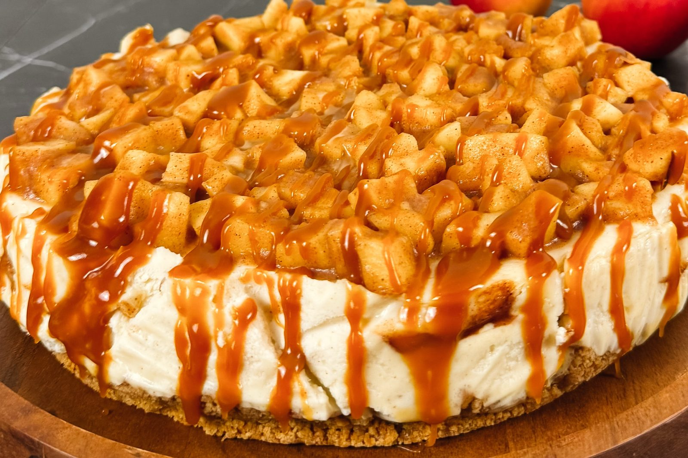

She’s the Goose

From the Oven · Autumn
A cinnamon cheesecake with brown-butter apples baked into the middle and piled on top, finished with salted caramel once it’s cold.
Most of this cheesecake is waiting. The apples are cooked first, so they stay tender rather than turning to mush, and the caramel goes on only after the cheesecake has chilled overnight. Start the day before you plan to serve it.
Graham cracker crust
Brown-butter apples
Cinnamon cheesecake filling
Salted caramel
Make the crust. Heat the oven to 325°F. Combine the graham cracker crumbs, melted butter, sugar, salt and cinnamon.
Press firmly into the bottom and slightly up the sides of a 9-inch springform pan. Bake 9–10 minutes, then let cool.
Brown the butter and cook the apples. Melt the butter in a large skillet over medium heat and keep cooking until it turns golden brown and smells nutty, about 3–5 minutes.
Add the apples, brown sugar, cinnamon, nutmeg and salt. Cook 5–7 minutes, stirring occasionally, until the apples soften but still hold their shape.
Stir in the vanilla and lemon juice. Add the cornstarch slurry and cook 1–2 minutes more, until the juices thicken. Remove from the heat and cool completely.
Make the filling. Beat the cream cheese and sugar on medium-low speed until completely smooth, about 2–3 minutes.
Add the sour cream, heavy cream, vanilla, cornstarch, cinnamon and salt, and mix until combined.
Add the eggs one at a time, mixing on low speed just until incorporated. Don’t overmix once the eggs are in.
Assemble. Pour half the filling over the cooled crust. Using a slotted spoon, so most of the syrup stays behind, spoon half the cooled apples evenly over the filling.
Gently spread the remaining filling over the apples and smooth the top with an offset spatula. Set aside the rest of the apples and their syrup for finishing.
Bake in a water bath. Wrap the outside of the springform pan securely in heavy-duty foil, or set it inside a slightly larger solid cake pan. Place it in a roasting pan and pour in hot water to come about halfway up the sides of the cheesecake pan.
Bake at 325°F for 70–85 minutes, until the edges are set but the center still has a gentle wobble. The outer two inches should look set and matte; the center, about the size of a saucer, should jiggle like set gelatin, not ripple like liquid.
Turn off the oven, crack the door, and leave the cheesecake inside for 45–60 minutes. Remove, cool completely at room temperature, then refrigerate at least 6 hours, preferably overnight. Leave it uncovered until it’s cold, and cover it only then, so condensation doesn’t drip onto the top.
Make the salted caramel. Put the sugar in a clean, heavy-bottomed saucepan over medium heat. Let it melt, stirring gently as needed to help it melt evenly; it will clump before it turns liquid.
Keep heating until the sugar is a rich amber, watching closely so it doesn’t burn.
Carefully add the butter and whisk until incorporated; it will bubble vigorously. Slowly pour in the warm cream while whisking; it will bubble again.
Remove from the heat and stir in the salt and vanilla. Let cool until thickened but still pourable.
Finish. Remove the fully chilled cheesecake from the springform pan. Spoon the reserved apples and their syrup over the top. If the apples have been refrigerated, warm them gently first and let them cool before adding.
Drizzle generously with the salted caramel. For clean slices, use a sharp knife dipped in hot water and wiped dry between cuts.
What makes this one work: apples tender but not mushy, butter browned far enough to smell nutty, and caramel added only once the cheesecake is fully chilled. The contrast between the creamy filling, the spiced apples and the salted caramel is the whole point.
Make ahead. The cheesecake keeps 1–2 days in the refrigerator, covered. Store the apple topping separately in the refrigerator for up to 3 days, and the caramel in an airtight jar for up to a week; warm it gently before serving.
To freeze. Freeze the plain cheesecake, without the apples or caramel, for up to 2 months. Thaw overnight in the refrigerator.